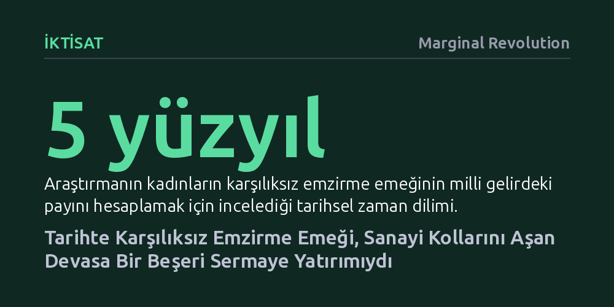

IKTISAT · Marginal Revolution · 2026-10-26
Beş yüz yıllık veriler, ücretsiz anne sütü emeğinin erken modern İngiltere'de çömlekçilik veya cam gibi sanayilerle yarışan en büyük beşeri sermaye yatırımı olduğunu gösteriyor. Ancak artan gelirler emzirmeyi azaltarak, zenginliğin çocuk ölümlerini doğrudan düşürdüğü varsayımını sarsıyor.
Kadınların ücretsiz bakım emeğinin sadece ailevi bir tercih değil, sanayi devrimi öncesinde ulusal refahı ve iş gücü kalitesini belirleyen temel bir makroekonomik motor olduğunu gösterir.

İktisat tarihi ve büyüme muhasebesi, geleneksel olarak piyasalarda alınıp satılan mallara, fabrikalara ve resmi kamu harcamalarına odaklanır. Ancak hane içinde harcanan ve parasal karşılığı olmayan kadın emeği, genellikle istatistiklerin dışında bırakılır. İktisat tarihçileri Louis Henderson ve Jane Humphries'in çalışması, beş yüz yıllık geniş bir tarihsel ufukta anne sütünün ve emzirme emeğinin milli gelire oranla yarattığı ekonomik değeri somut verilerle ortaya koyuyor.
Araştırmanın sunduğu bulgular, geçmiş yüzyıllarda annelerin sunduğu bu karşılıksız bakımın sıradan bir aile içi uğraş olmadığını gösteriyor. Elde edilen sayısal tahminlere göre anne sütünün ekonomik büyüklüğü; çömlekçilik, cam imalatı gibi dönemin bölgesel ölçekte lokomotifi sayılan sanayi kollarını ve hatta bizzat tarihi kamu sektörünün büyüklüğünü geride bırakacak düzeydeydi. Yakın tarihe kıyasla uzak geçmişte anne sütünün milli gelir içindeki nispi payı çok daha yüksekti.
Piyasa kayıtlarının bulunmadığı, kadınların ev içi emeğinin resmi belgelere yansımadığı yüzyıllar öncesini ölçmek sıra dışı bir metodoloji gerektirir. Yazarlar, bu devasa zaman dilimini aydınlatabilmek için salt yazılı arşiv belgeleriyle yetinmeyip biyoarkeolojik verileri iktisadi modellemeyle harmanladılar. Tarihi mezarlıklardan elde edilen iskelet kalıntıları ve bebek kemiklerindeki kimyasal izler, bebeklerin ne kadar süre anne sütüyle beslendiğini somut birer biyolojik gösterge olarak sundu.
Bu biyoarkeolojik kanıtlar tarihsel demografi ve hanehalkı harcama kayıtlarıyla birleştirildiğinde, beş asır boyunca emzirme pratiklerinin nasıl evrildiği ilk kez nicel bir temele oturtuldu. Araştırmacılar, bu verileri kullanarak alternatif besleme maliyetleri ve harcanan zaman üzerinden anne sütünün toplam ekonomik büyüklüğünü hesapladı; böylece milli gelir muhasebesinde yüzyıllardır göz ardı edilen devasa bir boşluk dolduruldu.
Bir ülkenin uzun vadeli ekonomik başarısı, fabrikalarından veya madenlerinden ziyade iş gücünün kalitesine, yani beşeri sermayesine bağlıdır. Çalışma, erken modern İngiltere'de iş gücünün hem fiziksel direncini hem de bilişsel kapasitesini inşa eden en büyük yatırım kaleminin annelerin emzirme emeği olduğunu vurguluyor. Bebeklik döneminde alınan anne sütü, çocukluk çağı hastalıklarına karşı bağışıklık sağlayarak yetişkinlikteki üretkenliğin temelini atıyordu.
Modern iktisat beşeri sermayeyi çoğunlukla okul eğitimi ve mesleki becerilerle başlatma eğilimindedir. Oysa Henderson ve Humphries, üretim potansiyelinin temellerinin beşik başında atıldığını hatırlatıyor. Anne sütü sayesinde hayatta kalan ve zihinsel-fiziksel gelişimi desteklenen nesiller, daha sonra Sanayi Devrimi'ni sırtlayacak olan İngiliz iş gücünün biyolojik temel taşını oluşturmuştu.
Araştırmanın iktisat teorisini en çok sarsan bulgusu ise gelir artışı ile emzirme arasındaki ters orantıda yatıyor. Klasik Malthusçu iktisat varsayımı, gelir düzeyi arttıkça yaşam koşullarının iyileşeceğini ve buna bağlı olarak bebek ve çocuk ölümlerinin azalacağını öngörür. Oysa veriler, gelir seviyesi yükseldikçe annelerin bebeklerini emzirme oranlarının muhtemelen düştüğünü ortaya koyuyor.
Gelir artışıyla birlikte kadınların iş gücüne katılım olanaklarının değişmesi veya yapay alternatif besinlere yönelimin artması, emzirmenin erken kesilmesine yol açtı. Hijyen koşullarının yetersiz olduğu erken modern dönemde anne sütünden erken kesilmek, bebekleri ölümcül enfeksiyonlara açık hale getirdi. Dolayısıyla zenginleşme, emzirmeyi baltalayarak paradoksal biçimde çocuk sağlığını riske attı ve gelir artışının otomatik olarak daha düşük ölüm oranı getirdiği tezini çürüttü.